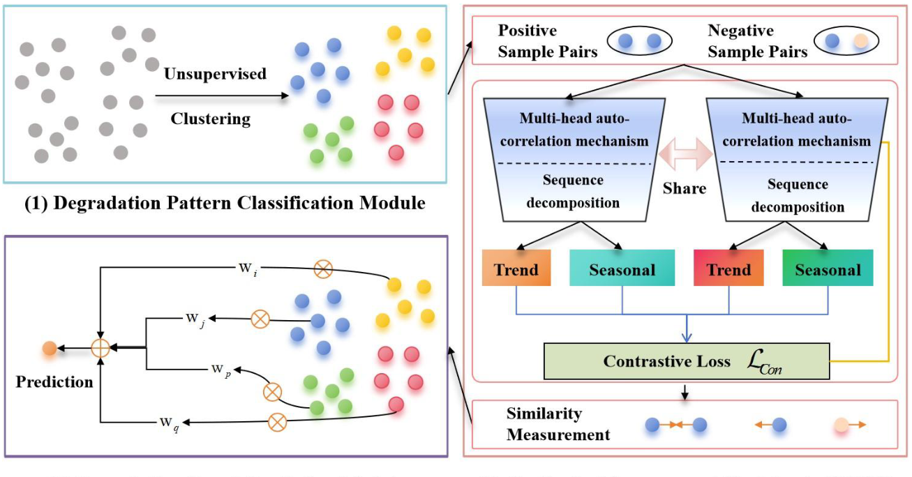
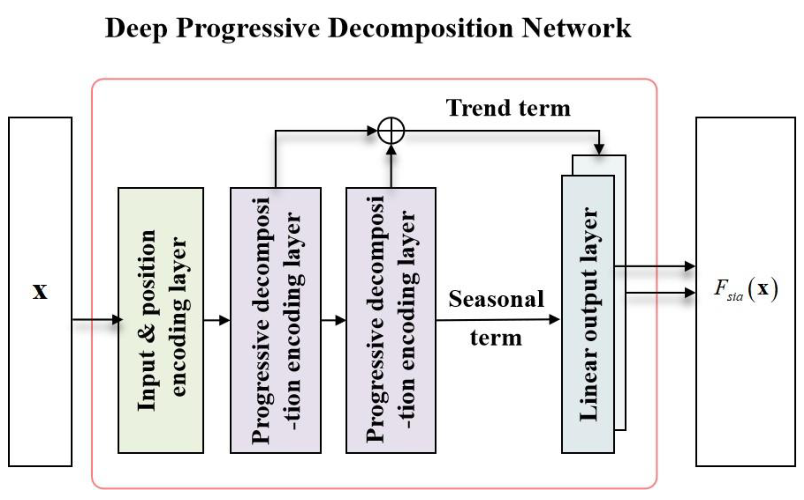
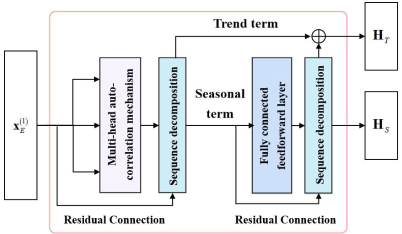
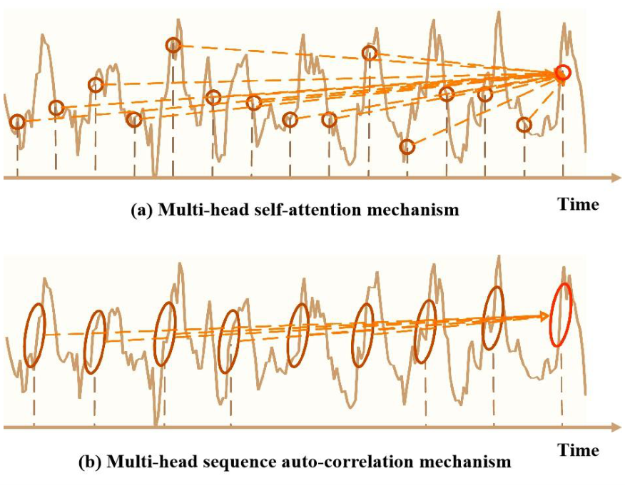
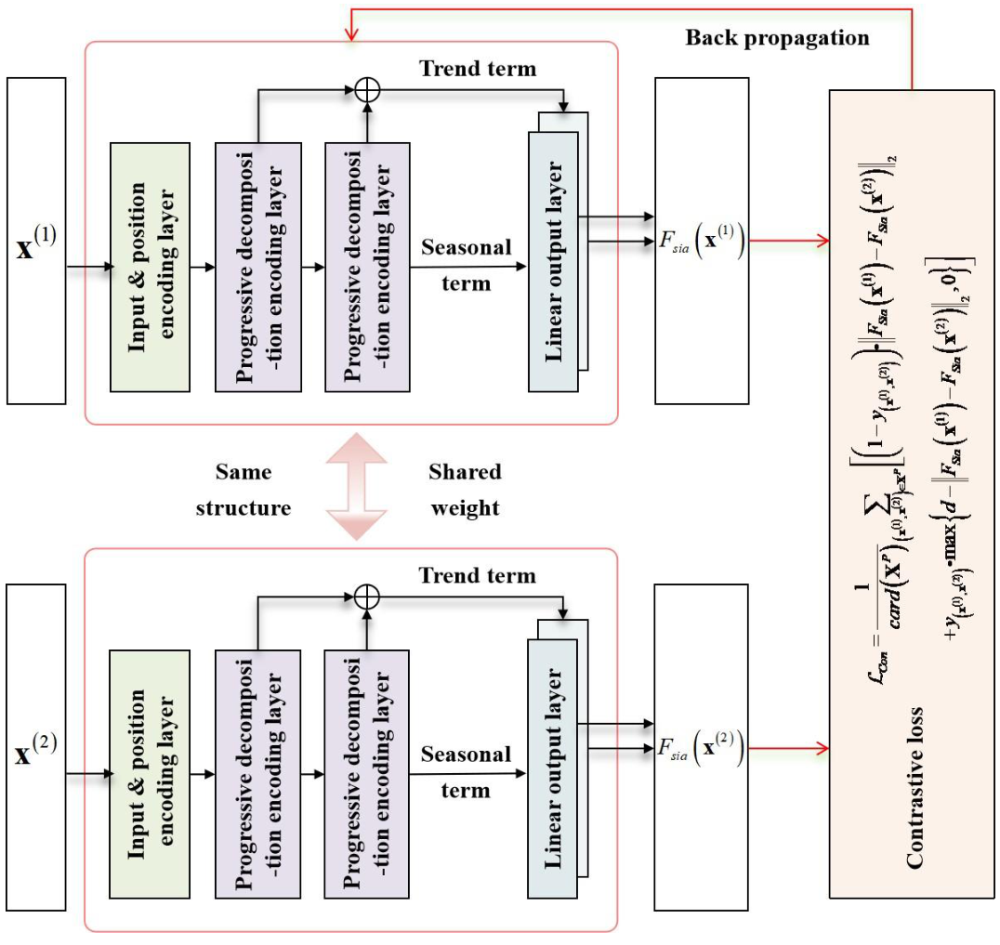
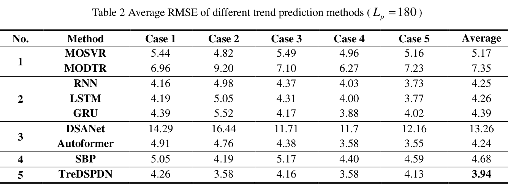
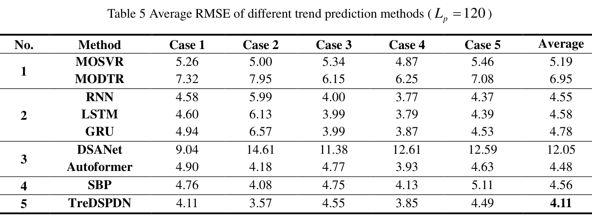
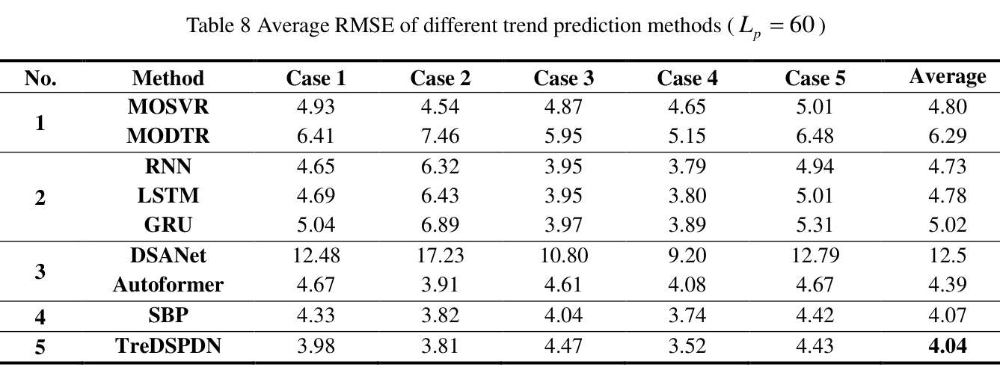

01 / CLUSTER
组织退化模式
通过迭代的样本分配与中心更新得到模式簇。为每个样本随机选择 5 个同簇伙伴和 5 个异簇伙伴，构建正、负样本对。
用渐进分解捕捉退化特征，以孪生网络学习模式相似性，匹配历史轨迹，预测航空发动机性能趋势。

研究对象：排气温度裕度（EGTM）退化趋势。上述结果对应论文所述数据与实验设置。
服役时长、运行环境和维修历史的差异，让发动机呈现多种退化模式。论文关注的问题是：如何降低不相似模式的干扰，同时捕捉序列层面的长期依赖？
论文提出深度孪生渐进分解网络（DSPDN）。首先，对退化模式进行无监督聚类，在同一簇内构造正样本对、不同簇间构造负样本对；随后通过对比学习训练相似性度量。特征提取网络将序列逐步分解为趋势项与季节项，并结合多头序列自相关机制提取时间特征。预测阶段，根据测试样本与历史样本的相似性分配权重，对历史样本的未来序列加权得到预测结果。
DSPDN 本身学习的是嵌入空间中的相似性度量。论文将结合相似性匹配的完整预测方法称为 TreDSPDN。
通过迭代的样本分配与中心更新得到模式簇。为每个样本随机选择 5 个同簇伙伴和 5 个异簇伙伴，构建正、负样本对。
共享权重的 DPDN 分支提取趋势与季节特征。对比损失拉近同簇样本、分离异簇样本；论文设置的间隔参数为 2.0。
把嵌入距离转换为相似度，再归一化为参考样本的权重。与当前样本更相似的历史序列，对最终预测贡献更大。



序列自相关机制通过相关性筛选时延，再对移位后的特征加权聚合。渐进分解层则用平均池化提取趋势项，将剩余部分作为季节项。
两类特征经线性映射并拼接后，用于孪生相似性度量。最终预测由历史参考样本的未来序列加权得到：
原论文 §3.3，第 14 页。w(v) 为归一化相似性权重。

论文使用一家国内航空公司的运行与维修数据，选择具有完整退化历史的发动机，并与 8 种基线方法比较。指标均为越低越好。
采用逐台留一交叉验证；滑动窗口长度 Lw 与预测长度满足 Lp = Lw / 2。网络使用 2 层渐进分解编码器、4 头序列自相关模块，编码维度为 128、嵌入维度为 64。
| 方法 | RMSE ↓ | MAE ↓ | MAPE (%) ↓ |
|---|---|---|---|
| MOSVR | 5.17 | 4.07 | 11.62 |
| MODTR | 7.35 | 5.95 | 17.47 |
| RNN | 4.25 | 3.45 | 10.10 |
| LSTM | 4.26 | 3.46 | 10.16 |
| GRU | 4.39 | 3.59 | 10.68 |
| DSANet | 13.26 | 12.60 | 37.16 |
| Autoformer | 4.24 | 3.35 | 9.70 |
| SBP | 4.68 | 3.67 | 10.45 |
| TreDSPDN本文方法 | 3.94，该列最低 | 3.20，该列最低 | 9.42，该列最低 |
来源：原论文表 2–4（第 17–18 页）。青色粗体表示该列最低值。
| 方法 | RMSE ↓ | MAE ↓ | MAPE (%) ↓ |
|---|---|---|---|
| MOSVR | 5.19 | 4.07 | 11.52 |
| MODTR | 6.95 | 5.44 | 15.83 |
| RNN | 4.55 | 3.70 | 11.00 |
| LSTM | 4.58 | 3.74 | 11.13 |
| GRU | 4.78 | 3.94 | 11.82 |
| DSANet | 12.05 | 11.31 | 33.03 |
| Autoformer | 4.48 | 3.57 | 9.99 |
| SBP | 4.56 | 3.54 | 10.02 |
| TreDSPDN本文方法 | 4.11，该列最低 | 3.34，该列最低 | 9.59，该列最低 |
来源：原论文表 5–7（第 18–19 页）。青色粗体表示该列最低值。
| 方法 | RMSE ↓ | MAE ↓ | MAPE (%) ↓ |
|---|---|---|---|
| MOSVR | 4.80 | 3.71 | 10.50 |
| MODTR | 6.29 | 4.82 | 14.05 |
| RNN | 4.73 | 3.86 | 11.56 |
| LSTM | 4.78 | 3.91 | 11.72 |
| GRU | 5.02 | 4.14 | 12.51 |
| DSANet | 12.50 | 11.90 | 34.77 |
| Autoformer | 4.39 | 3.45 | 9.76 |
| SBP | 4.07 | 3.13，该列最低 | 8.85，该列最低 |
| TreDSPDN本文方法 | 4.04，该列最低 | 3.22 | 9.18 |
来源：原论文表 8–10（第 19–20 页）。青色粗体表示该列最低值。



聚类中心数 20；Adam 优化器，学习率 0.0002，β₁ = 0.5，β₂ = 0.999；batch size 为 128。论文实现环境为 Python 3.9、PyTorch 1.11.0。
对照方法：MOSVR、MODTR、RNN、LSTM、GRU、DSANet、Autoformer 与基于欧氏距离的相似性预测（SBP）。
论文在 180 步预测下比较不同聚类中心数量。在已测试的设置中，20 个中心对应最低的平均 RMSE、MAE 与 MAPE；增加聚类数量并未持续改善结果。
这是聚类数量的敏感性分析；正文未提供逐一移除网络组件的完整消融实验。
| 聚类数 | RMSE ↓ | MAE ↓ | MAPE (%) ↓ |
|---|---|---|---|
| 5 | 4.01 | 3.25 | 9.55 |
| 10 | 3.96 | 3.22 | 9.46 |
| 20 | 3.94 | 3.20 | 9.42 |
| 40 | 4.02 | 3.25 | 9.54 |
| 80 | 4.01 | 3.25 | 9.53 |
| 120 | 4.04 | 3.26 | 9.59 |
| 160 | 4.24 | 3.40 | 9.97 |
来源：第 21–22 页。此处数值逐格对照原表。
将论文支持的结论与尚待验证的条件分开，有助于判断方法在新数据与新任务中的适用性。
网页中的图表均从所提供 PDF 裁剪；完整方法、逐台结果与参考文献可在原文中查阅。
当前 PDF 未列出作者、机构与出版信息，因此仅展示已确认的论文题名。正式引用请以最终发表版本为准。